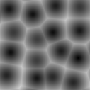
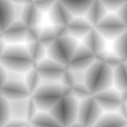
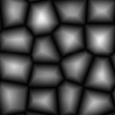
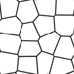

SeExpr 快速參考¶
This page details all the available variables, functions, and operators in SeExpr. It is a heavily edited version of the official user documentation, adapted for usage with Krita.
也參考
Source code at KDE Invent
Disney's SeExpr API Documentation
也參考
目錄
Variables¶
External variables¶
These variables are provided by host applications, in this case Krita. They are registered with SeExpr's autocomplete help, which can be accessed by Ctrl+Space.
Local Variables¶
Local variables can be defined at the start of the expression:
$a = noise($P);
$b = noise($a * 1);
pow($a, 0.5) + $b
External variables can also be overridden by local assignment. This can be useful to scale the noise frequency for instance:
$P = $P * 10; # increase noise frequency
fbm(vnoise($P) + $P/4)
You can also define namespaced variables, e.g.:
$A::a = $u * 10;
Control Structures¶
SeExpr provides the well-known if conditional structure:
if ($ u > 0.5) {
$color = [0, 0, 1];
}
else {
$color = [1, 0, 0];
}
$color
And the ternary operator:
$u = $i < .5 ? 0.0 : 10.0
You can freely nest ternary operators, e.g.:
$color = $u < .5 ? ($v < 0.5 ? [0, 0, 1] : [1, 0, 0]) : [0, 1, 0];
$color
You can also achieve the same with if structures:
if ($ u > 0.5) {
if ($v < 0.5) {
$color = [0, 0, 1];
}
else {
$color = [1, 0, 0];
}
}
else {
$color = [1, 0, 0];
}
$color
Operators (listed in decreasing precedence)¶
- [a,b,c]¶
vector constructor
- $P[ n ]¶
vector component access
提示
nmust be 0, 1, or 2, e.g.:$P[0]
- ^¶
exponentiation
備註
Same as the
powfunction.- !¶
logical NOT
- ~¶
inversion
提示
~$A
gives the same result as:
1 - $A
- */ %¶
multiply, divide, modulus
備註
%is the same as thefmodfunction.- +-¶
add, subtract
- <> <= >=¶
comparison: less than, greater than, less or equal than, greater or equal than
備註
Only uses the first component of a vector.
- == !=¶
equality, inequality
- &&¶
logical AND
- ||¶
logical OR
- ?:¶
ternary
ifoperator提示
Example:
$u < .5 ? 0 : 1
- ->¶
apply - The function on the right of the arrow is applied to the expression on the left.
提示
Examples:
$Cs->contrast(.7) -> clamp(0.2,0.8) $u->hsi(20,1.2,1,$Cs->gamma(1.2))
Assignment Operators¶
Besides the basic assignment statement:
$foo = $bar
you can also do operator assignments such as:
$foo += $bar;
which is equivalent to:
$foo = $foo + $bar;
Additionally, there are:
+=-=/=%=*=^=
Logging Functions¶
- float printf ( string format, [param0, param1, ...] )¶
Prints a string to stdout that is formatted as given. Formatting parameters possible are
%ffor float (takes the first component of vector argument) or%vfor vector.提示
For example, if you wrote:
$u = printf("test %f %v",[1,2,3],[4,5,6]);you would get in your console:
test 1 [4,5,6]
- string sprintf ( string format, [double|string, double|string, ...] )¶
Returns a string formatted from the given values. See
man sprintffor format details.
Color, Masking, and Remapping Functions¶
- float bias ( float x, float b)¶
Variation of gamma where control parameter goes from
0to1with values> 0.5pulling the curve up and values< 0.5pulling the curve down. Defined aspow(x, log(b)/log(0.5)).- float boxstep ( float x, float a )¶
- float gaussstep ( float x, float a, float b )¶
- float linearstep ( float x, float a, float b )¶
- float smoothstep ( float x, float a, float b )¶
The step functions are zero for
x < aand one forx > b(orx > ain the case of boxstep). Betweenaandb, the value changes continuously between zero and one. Thegausstepfunction uses the standard Gaussian "bell" curve which is based on an exponential curve. Thesmoothstepfunction uses a cubic curve. Intuitively,gausstephas a sharper transition near one and a softer transition near zero whereassmoothstephas a medium softness near both one and zero.- float clamp ( float x, float lo, float hi )¶
Constrain
xto range[lo, hi].- float compress ( float x, float lo, float hi )¶
Compress the dynamic range from
[0, 1]to[lo, hi].- float contrast ( float x, float c )¶
Adjust the contrast. For
cfrom0to0.5, the contrast is decreased. Forc > 0.5, the contrast is increased.- float expand ( float x, float lo, float hi )¶
Expand the dynamic range from
[lo, hi]to[0, 1].- float fit ( float x, float a1, float b1, float a2, float b2 )¶
Linear remapping of
[a1..x..b1]to[a2..x..b2]- float gamma ( float x, float g)¶
pow(x, 1/g)- float invert ( float x )¶
Invert the value. Defined as
1 - x.- color hsi ( color x, float h, float s, float i, float map=1 )¶
The
hsifunction shifts the hue byh(in degrees) and scales the saturation and intensity bysandirespectively. A map may be supplied which will control the shift - the full shift will happen when the map is one and no shift will happen when the map is zero. The shift will be scaled back for values between zero and one.- color hsltorgb ( color hsl )¶
- color rgbtohsl ( color rgb )¶
RGB to HSL color space conversion. HSL is Hue, Saturation, Lightness (all in the range
[0, 1]). These functions have also been extended to support RGB and HSL values outside of the range[0, 1]in a reasonable way. For any RGB or HSL value (except for negative values), the conversion is well-defined and reversible.- color midhsi ( color x, float h, float s, float i, float map, float falloff=1, int interp=0 )¶
The
midhsifunction is just like thehsifunction except that the control map is centered around the mid point (value of0.5) and can scale the shift in both directions. At the mid point, no shift happens. At 1.0, the full shift happens, and at0.0, the full inverse shift happens. Additionalfalloffandinterpcontrols are provided to adjust the map using theremapfunction. The defaultfalloffandinterpvalues result in no remapping.- float mix ( float a, float b, float alpha )¶
Blend of a and b according to alpha. Defined as
a*(1-alpha) +b*alpha.- float remap ( float x, float source, float range, float falloff, int interp )¶
General remapping function. When
xis within± rangeof source, the result is one. The result falls to zero beyond that range overfalloffdistance. The falloff shape is controlled byinterp.備註
Numeric values or named constants may be used:
int linear = 0
int smooth = 1
int gaussian = 2
Noise Functions¶
- float cellnoise ( vector v )¶
- float cellnoise1 ( float x )¶
- float cellnoise2 ( float x, float y )¶
- float cellnoise3 ( float x, float y, float z )¶
- color ccellnoise ( vector v )¶
cellnoisegenerates a field of constant colored cubes based on the integer location. This is the same as the PRMan cellnoise function.備註
ccellnoiseoutputs color cellnoise.- float fbm ( vector v, int octaves=6, float lacunarity=2, float gain=0.5 )¶
- color cfbm ( vector v, int octaves=6, float lacunarity=2, float gain=0.5 )¶
- vector vfbm ( vector v, int octaves=6, float lacunarity=2, float gain=0.5 )¶
- float fbm4 ( vector v, float time, int octaves=6, float lacunarity=2, float gain=0.5 )¶
- color cfbm4 ( vector v, float time, int octaves=6, float lacunarity=2, float gain=0.5 )¶
- vector vfbm4 ( vector v, float time, int octaves=6, float lacunarity=2, float gain=0.5 )¶
fbm(Fractal Brownian Motion) is a multi-frequency noise function. The base frequency is the same as thenoisefunction. The total number of frequencies is controlled byoctaves. Thelacunarityis the spacing between the frequencies - a value of 2 means each octave is twice the previous frequency. Thegaincontrols how much each frequency is scaled relative to the previous frequency.備註
cfbmandcfbm4outputs color noise.vfbmandvfbm4outputs vector noise.- float hash ( float seed1, [float seed2, ...] )¶
Like
rand, but with no internal seeds. Any number of seeds may be given and the result will be a random function based on all the seeds.- float noise ( vector v )¶
- float noise ( float x, float y )¶
- float noise ( float x, float y, float z )¶
- float noise ( float x, float y, float z, float w )¶
- color cnoise ( vector v)¶
- color cnoise4 ( vector v, float t)¶
- float pnoise ( vector v, vector period )¶
- float snoise ( vector v)¶
- float snoise4 ( vector v, float t)¶
- vector vnoise (vector v )¶
- vector vnoise4 (vector v, float t )¶
noiseis a random function that smoothly blends between samples at integer locations. This is Ken Perlin's original noise function.備註
cnoiseandcnoise4output color noise.noise4outputs signed vector noise.pnoiseoutputs periodic noise.snoiseandsnoise4output signed noise with range[-1, 1].vnoiseoutputs signed vector noise.- float rand ( [float min, float max], [float seed] )¶
Random number between
[min, max](or[0, 1]if unspecified). If a seed is supplied, it will be used in addition to the internal seeds and may be used to create multiple distinct generators.- float turbulence ( vector v, int octaves=6, float lacunarity=2, float gain=0.5 )¶
- color cturbulence ( vector v, int octaves=6, float lacunarity=2, float gain=0.5 )¶
- vector vturbulence ( vector v, int octaves=6, float lacunarity=2, float gain=0.5 )¶
turbulenceis a variant offbmwhere the absolute value of each noise term is taken. This gives a more billowy appearance.- float voronoi ( vector v, int type=1, float jitter=0.5, float fbmScale=0, int fbmOctaves=4, float fbmLacunarity=2, float fbmGain=0.5)¶
- color cvoronoi ( vector v, int type=1, float jitter=0.5, float fbmScale=0, int fbmOctaves=4, float fbmLacunarity=2, float fbmGain=0.5)¶
- vector pvoronoi ( vector v, float jitter=0.5, float fbmScale=0, int fbmOctaves=4, float fbmLacunarity=2, float fbmGain=0.5)¶
voronoiis a cellular noise pattern. It is a jittered variant ofcellnoise. The type parameter describes different variants of the noise function. Thejitterparam controls how irregular the pattern is (0 is like ordinary cellnoise). Thefbm...params can be used to distort the noise field. WhenfbmScaleis zero (the default), there is no distortion. The remaining params are the same as for thefbmfunction.提示
Voronoi types 1 through 5:
   
備註
cvoronoireturns a random color for each cell andpvoronoireturns the point location of the center of the cell.
Selection Functions¶
- float choose ( float index, float choice1, float choice2, [...] )¶
Chooses one of the supplied choices based on the index (assumed to be in the range
[0, 1]).- int cycle ( int index, int loRange, int hiRange )¶
Cycles through values between loRange and hiRange based on supplied index. This is an offset
modfunction. The result is computed asloRange + value % (hiRange-loRange+1).- int pick ( float index, int loRange, int hiRange, [ float weights, ... ] )¶
Picks values randomly between loRange and hiRange based on supplied index (which is automatically hashed). The values will be distributed according to the supplied weights. Any weights not supplied are assumed to be 1.0.
- float wchoose ( float index, float choice1, float weight1, float choice2, float weight2, [...] )¶
Chooses one of the supplied choices based on the index (assumed to be in range
[0, 1]). The values will be distributed according to the supplied weights.
提示
This example returns integer values between 1 and 10:
pick(value, 1, 10)
This example returns the values 1 and 2 twice and 2.5 times as often respectively as compared to the other values (3-10):
pick(value, 1, 10, 2, 2.5)
This example returns 10, 11, and 13 through 20 (12 is skipped due to zero weight):
pick(value, 10, 20, 1, 1, 0)
General Mathematical Constants and Functions¶
- float abs ( float x)¶
Absolute value of
x.- float cbrt ( float x )¶
Cube root.
- float ceil ( float x )¶
Next higher integer.
- float exp ( float x )¶
Eraised to thexpower.- float floor ( float x )¶
Next lower integer.
- float fmod ( float x, float y )¶
Remainder of
x / y.備註
Also available as the
%operator.- float log ( float x )¶
Natural logarithm.
- float log10 ( float x )¶
Base 10 logarithm.
- float max ( float a, float b )¶
Greater of
aandb.- float min ( float a, float b )¶
Lesser of
aandb.- float pow ( float x, float y )¶
xto theypower.備註
Also available as the
^operator.- float round ( float x )¶
Nearest integer.
- float sqrt ( float x )¶
Square root.
- float trunc ( float x )¶
Nearest integer towards zero.
Trigonometry Functions¶
- float acos ( float x )¶
Arc cosine.
- float acosd ( float x )¶
Arc cosine in degrees.
- float acosh ( float x )¶
Hyperbolic arc cosine.
- float asin ( float x )¶
Arc sine.
- float asind ( float x )¶
Arc sine in degrees.
- float asinh ( float x )¶
Hyperbolic arc sine.
- float atan ( float x )¶
Arc tangent.
- float atand ( float x )¶
Arc tangent in degrees.
- float atan2 ( float y, float x)¶
Arc tangent of
y/xbetween-PIandPI.- float atan2d ( float y, float x )¶
Arc tangent in degrees of
y/xbetween-180ºand180º.- float atanh ( float x )¶
Hyperbolic arc tangent.
- float cos ( float x )¶
Cosine.
- float cosd ( float x )¶
Cosine in degrees.
- float cosh ( float x )¶
Hyperbolic cosine.
- float deg ( float x )¶
Radians to degrees.
- float hypot ( float x, float y )¶
Length of 2D vector
[x, y].- float rad ( float x )¶
Degrees to radians.
- float sin ( float x )¶
Sine.
- float sind ( float x )¶
Sine in degrees.
- float sinh ( float x )¶
Hyperbolic sine.
- float tan ( float x )¶
Tangent.
- float tand ( float x )¶
Tangent in degrees.
- float tanh ( float x )¶
Hyperbolic tangent.
Vector Functions¶
- float angle ( vector a, vector b )¶
Angle between two vectors (in radians).
- vector cross ( vector a, vector b )¶
Vector cross product.
- float dist ( vector a, vector b )¶
Distance between two points.
- float dot ( vector a, vector b)¶
Vector dot product.
- float length ( vector v )¶
Length of vector.
- vector norm ( vector v )¶
Vector scaled to unit length.
- vector ortho ( vector a, vector b )¶
Vector orthographic to two vectors.
- vector rotate ( vector v, vector axis, float angle )¶
Rotates
varound axis by the givenangle(in radians).- vector up ( vector v, vector up )¶
Rotates
vsuch that the Y axis points in the givenupdirection.
Vector Support¶
Vectors (points, colors, or 3D vectors) may be intermixed with scalars
(simple floating point values). If a scalar is used in a vector context, it is
replicated into the three components, e.g. 0.5 becomes [0.5, 0.5, 0.5].
If a vector is used in a scalar context, only the first component is used.
One of the benefits of this is that all the functions that are defined
to work with scalars automatically extend to vectors. For instance,
pick, choose, cycle, spline, etc., will work just fine
with vectors.
Arithmetic operators such as +, *, etc., and scalar functions are
applied component-wise to vectors. For example, applying the gamma
function to a map adjusts the gamma of all three color channels.
Curve Functions¶
Interpolation of parameter values to a set of control points is governed by the following functions.
- color ccurve ( float param, float pos0, color val0, int interp0, float pos1, color val1, int interp1, [...] )¶
Interpolates color ramp given by control points at
param. Control points are specified by triples of parameterspos_i,val_i, andinterp_i.提示
Interpolation codes are:
0 - none
1 - linear
2 - smooth
3 - spline
4 - monotone (non-oscillating) spline
- float curve ( float param, float pos0, float val0, int interp0, float pos1, float val1, int interp1, [...] )¶
Interpolates a 1D ramp defined by control points at
param. Control points are specified by triples of parameterspos_i,val_i, andinterp_i.提示
Interpolation codes are:
0 - none
1 - linear
2 - smooth
3 - spline
4 - monotone (non-oscillating) spline
- float spline ( float param, float y1, float y2, float y3, float y4, [...] )¶
Interpolates a set of values to the parameter specified where
y1, ...,ynare distributed evenly from[0, 1].
Custom Plugins¶
Custom functions may be written in C++ and loaded as one or more dynamic plugins. See Writing Custom Expression Plugins for more details.
警告
This functionality is not supported in Krita.
Comments¶
You can add comments to your script by using the
#character. SeExpr will then skip the rest of the line for rendering purposes. However, they are not ignored; comments can still be used to declare the valid value range of integer, float, and vector variables. This enables you to manage them using widgets that will accept the specified range.提示
$var0is an integer variable that ranges between 0 and 10 inclusive:$var1is a floating point variable with the same range:$var2is a vector variable:The latter is very helpful; SeExpr considers vectors with range
[0, 1]as colors:In all cases, if not specified, the associated widgets' range will go from 0 to 1.
For a multi-line expression, each line may have its own comment.